Nuestra Misión
En MEDICALIDW, nuestra misión es mejorar la calidad de vida de las personas a través de una atención médica cercana, confiable y de excelencia. Apostamos a la innovación y al trato humano en cada consulta.
Contamos con profesionales altamente capacitados y tecnología de vanguardia. Brindamos diagnósticos certeros, tratamientos efectivos y un acompañamiento integral, promoviendo inclusión y bienestar en cada etapa de la vida.
Nuestras Clínicas
Clínica Norte
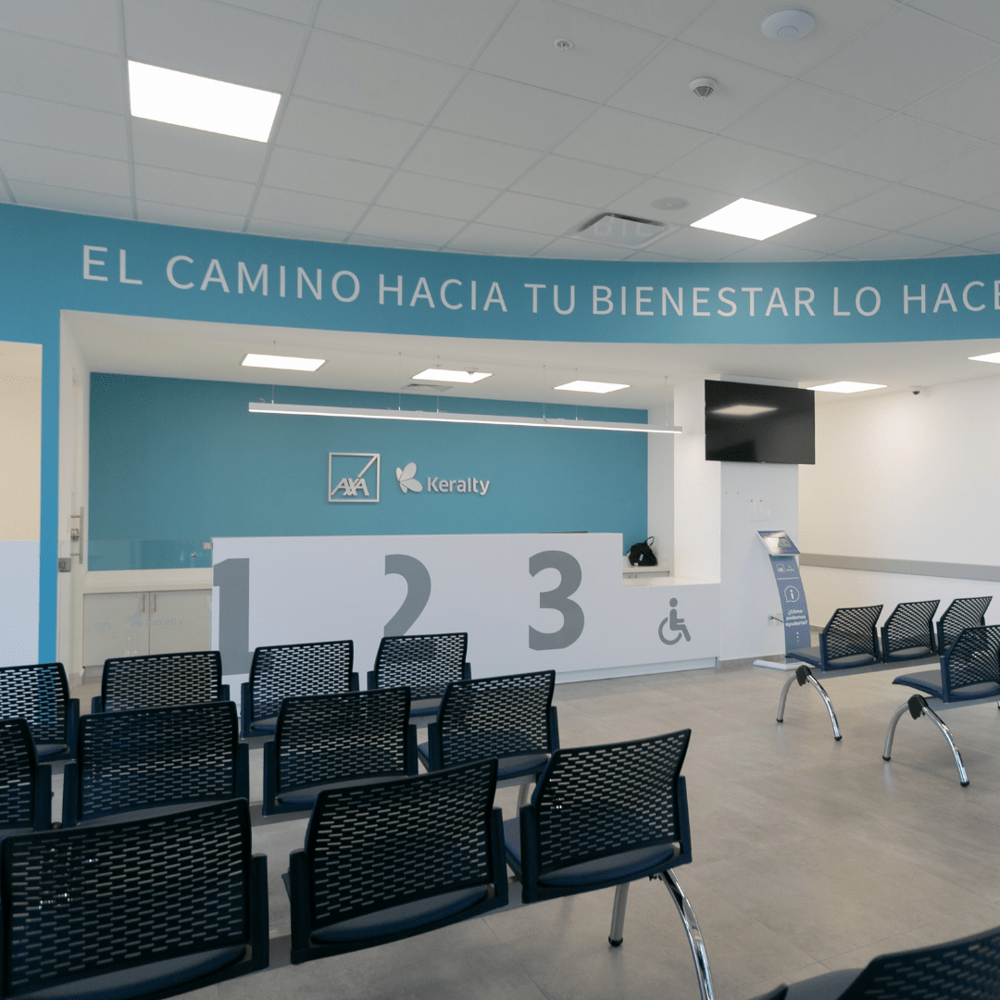Especialidades:
- Pediatría
- Cardiología
- Dermatología
Dirección: Av. Mendoza 2301, Rio Gallegos
Horarios: Lunes a Sabados 08:00 - 20:00
Ver másClínica Sur
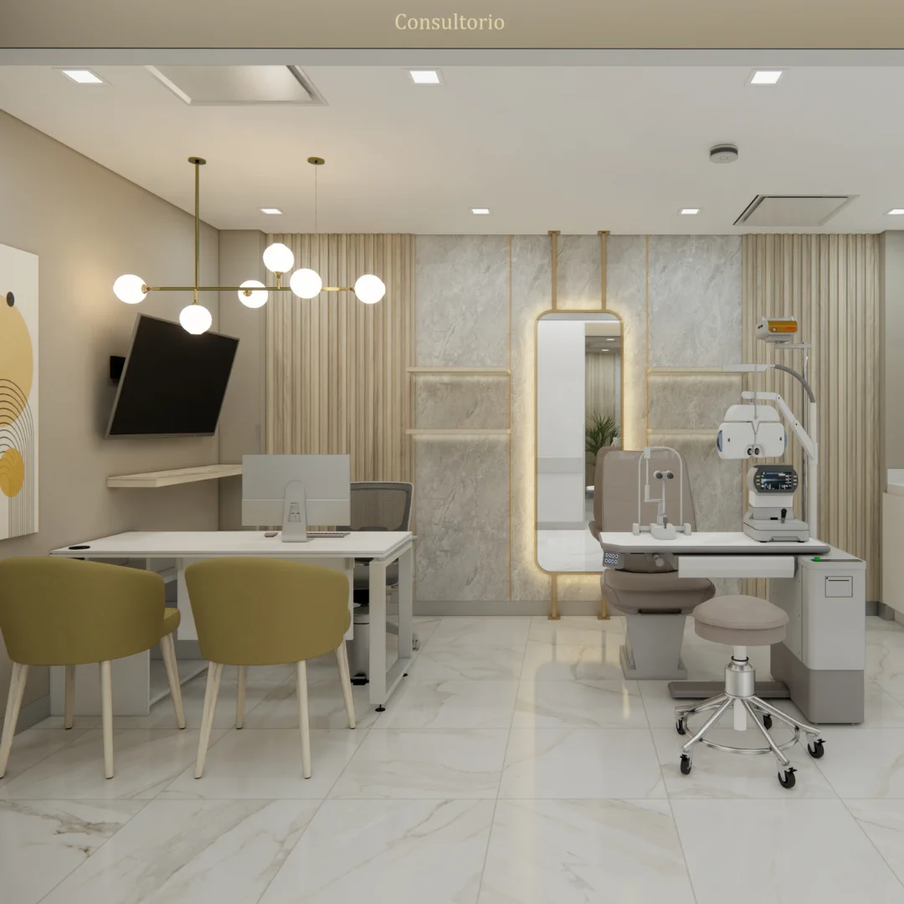Especialidades:
- Oftalmología
- Ginecología y Obstetricia
- Radiología
Dirección: Av. Fretes 1011, Rio Gallegos
Horarios: Lunes a Sabados 08:00 - 20:00
Ver másClínica Oeste
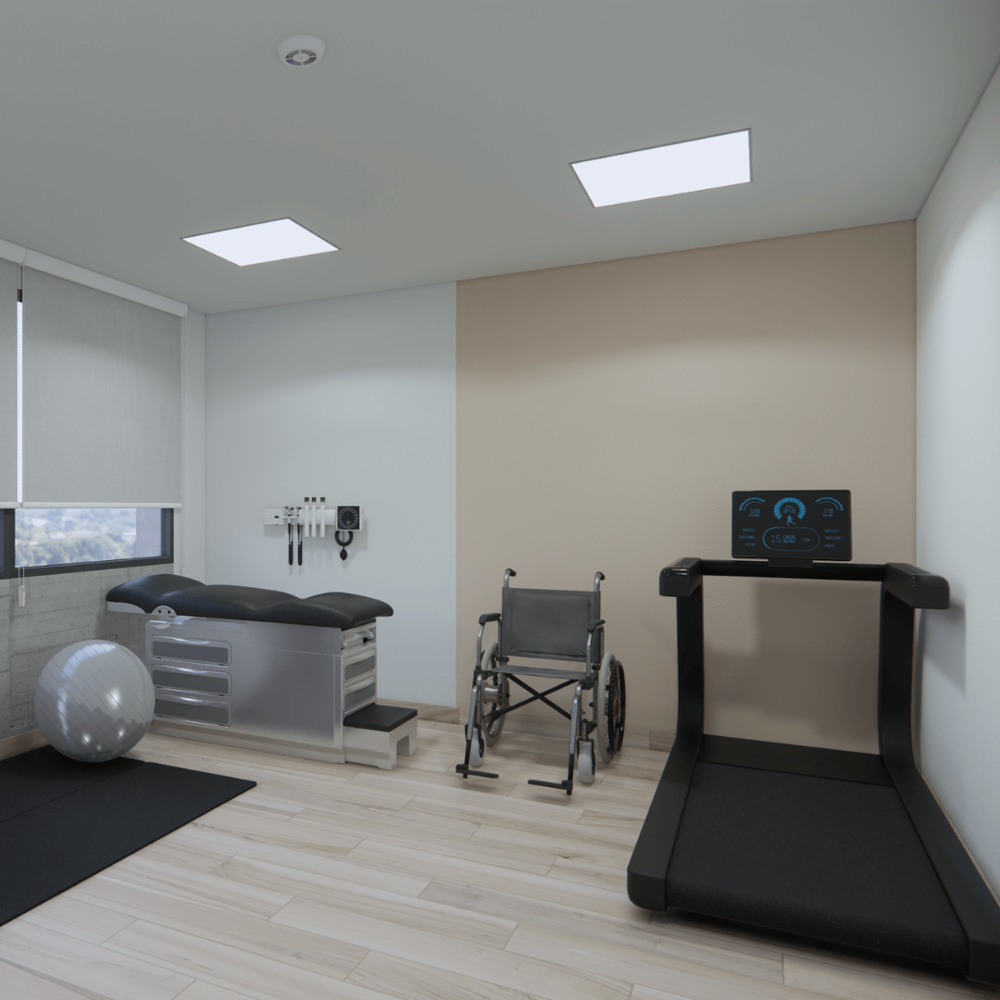Especialidades:
- Neurología
- Oncología
- Rehabilitación
Dirección: Av. Libertad 123, Calafate
Horarios: Lunes a Viernes 07:00 - 19:00
Ver másObras Sociales
En MEDICALIDW tenemos convenios con diversas obras sociales para facilitar tu acceso a nuestros servicios.
 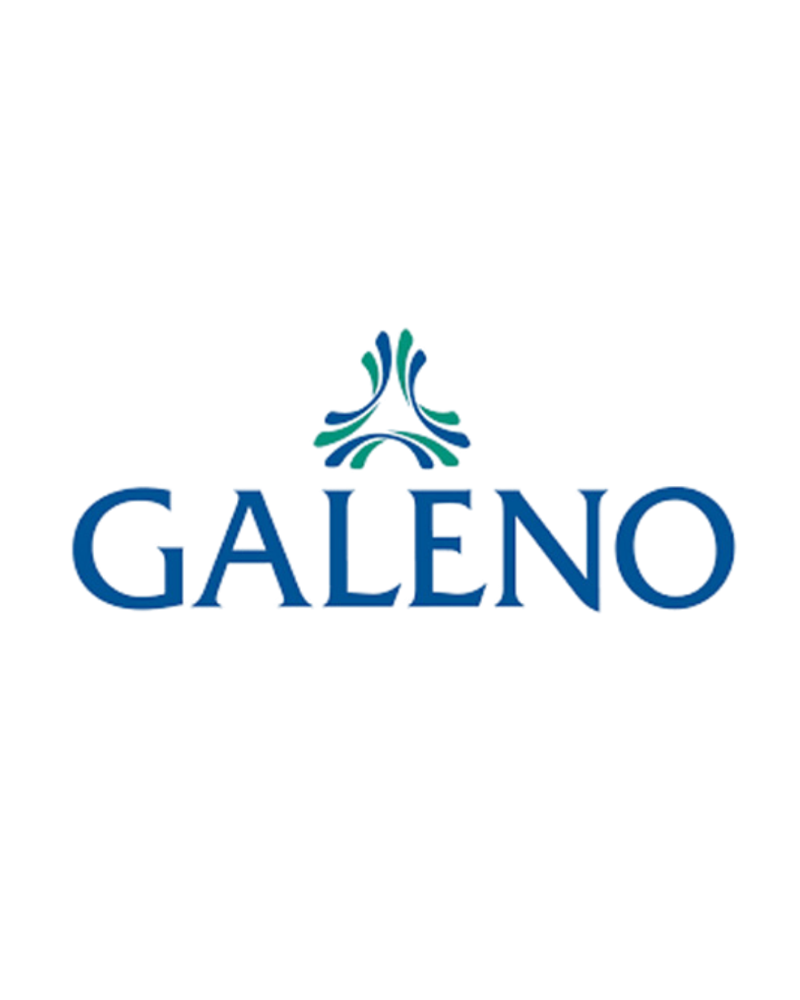
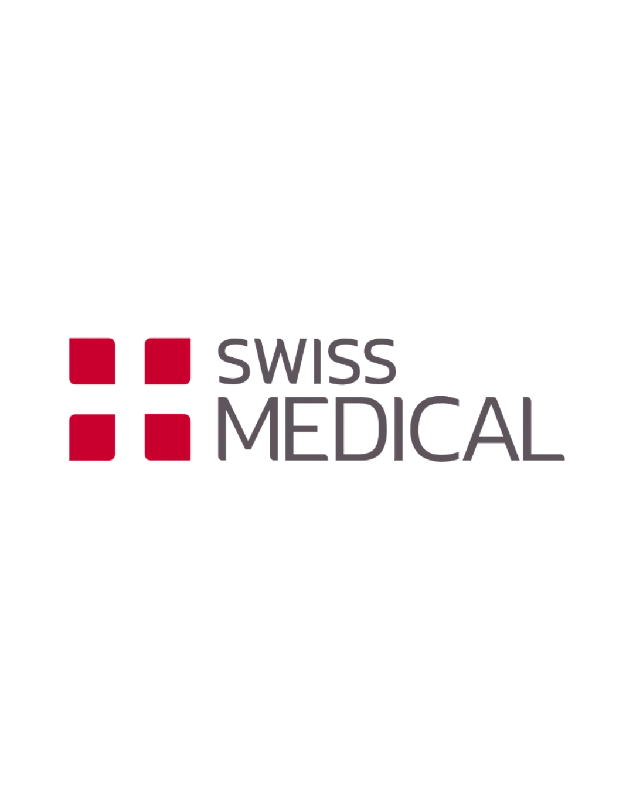
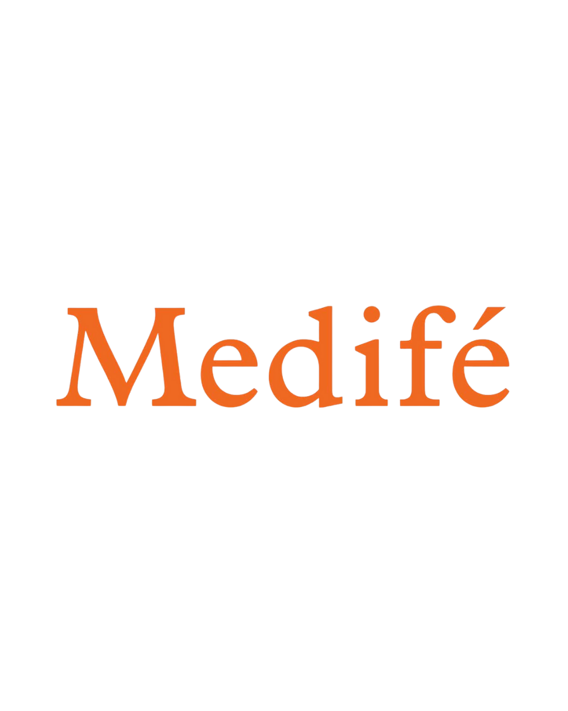
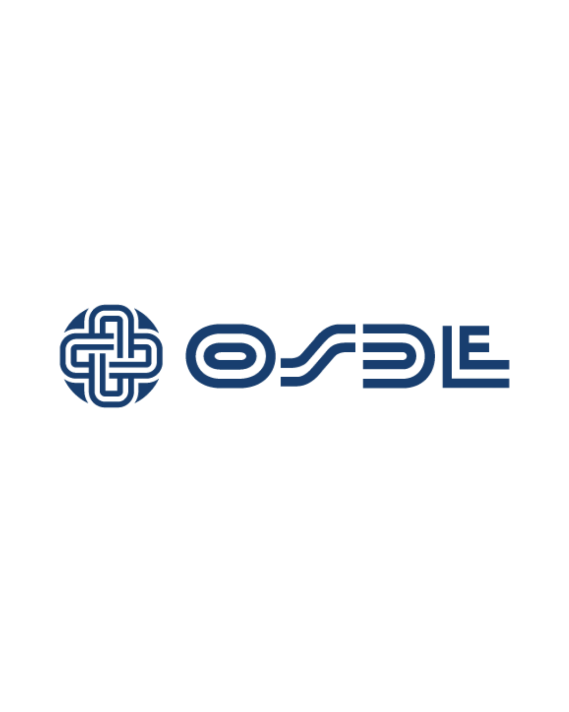
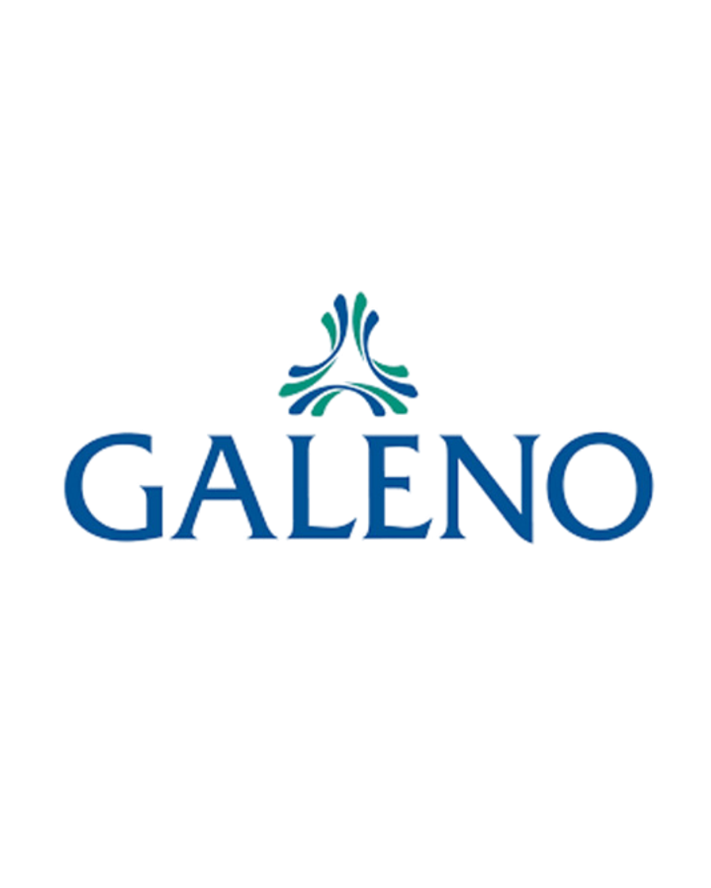
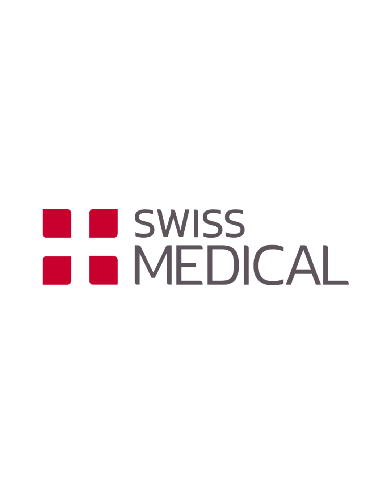
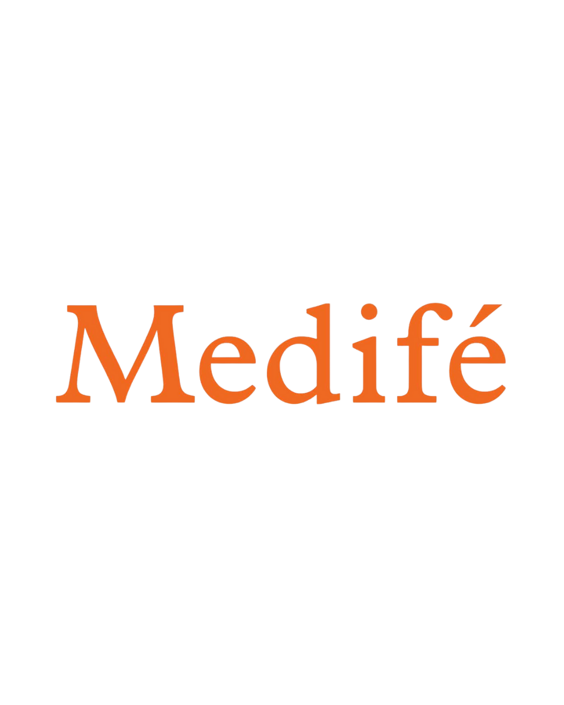
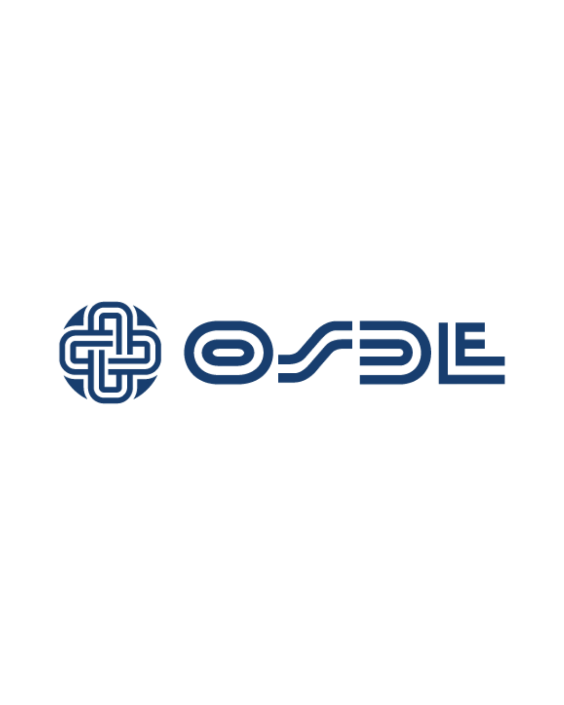